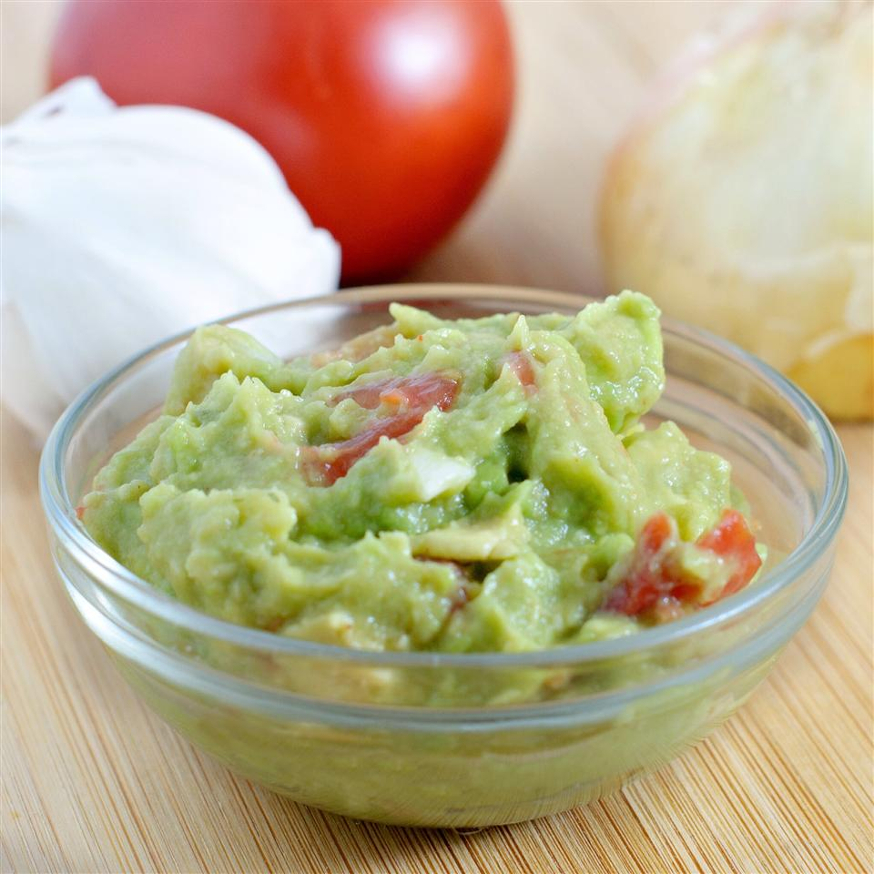

Guacamole

Description
Simply a quick recipe for tasty guacamole! Great with tortilla chips or as a topping for Mexican foods!
- Prep: 10 mins
- Additional: 30 mins
- Total: 40 mins
- Servings: 16
- Yield: 2 cups
Ingredients
- 2 avocados
- 1 small onion, finely chopped
- 1 clove garlic, minced
- 1 ripe tomato, chopped
- 1 lime, juiced
- Salt and pepper to taste
Steps
- Peel and mash avocados in a medium serving bowl. Stir in onion, garlic, tomato, lime juice, salt and pepper. Season with remaining lime juice and salt and pepper to taste. Chill for half an hour to blend flavors.
Return to main page